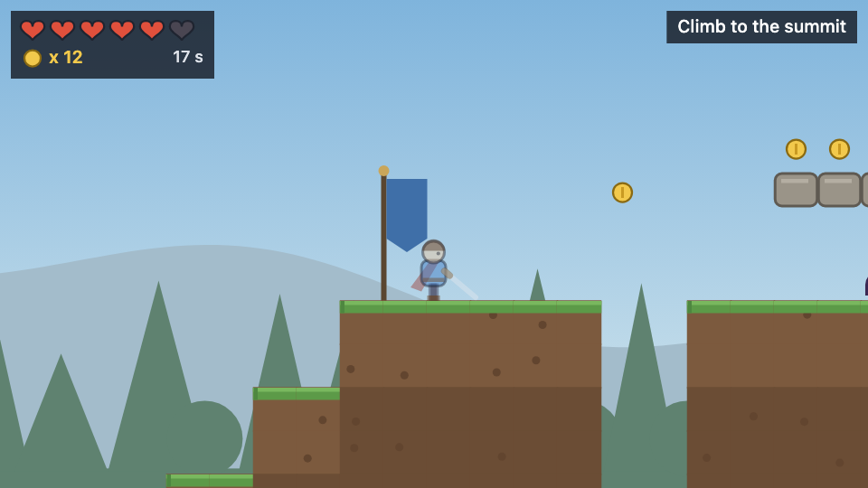
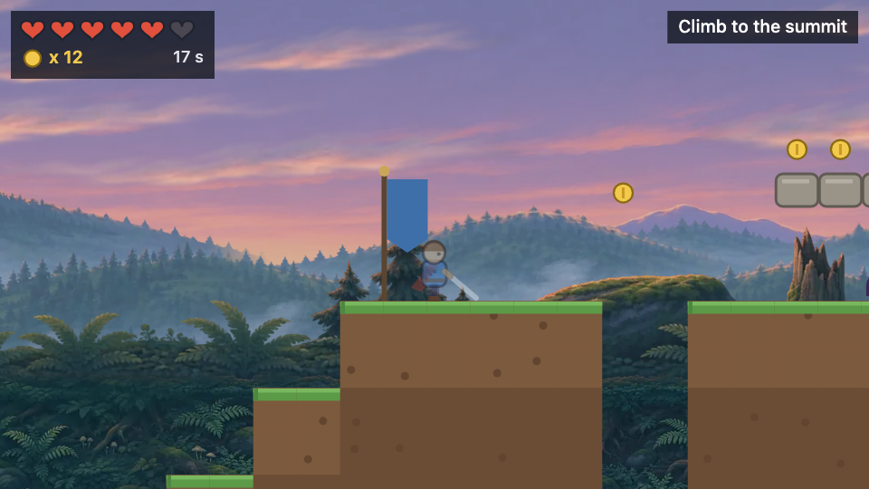

Five hand-painted background layers generated once at build time (Codex image_gen, one locked style), post-processed to repeat without a seam, scrolled at their own depth with an atmospheric tint per layer. The game only loads the files; when one is missing it keeps its old flat layer.
Each file is drawn at the view height and repeated sideways. Far is opaque; clouds, mid and near have real alpha (shown on a checkerboard). Factor = how far the layer moves per pixel the camera moves.
Every layer's right edge followed by its own left edge, at 2x, with the join in the middle of each strip (the white tick marks it). Wide layers are two generated panels joined into one strip; the panel join is shown too.
The shipped dusk pack wired into an unseen HD side-scroller (Hollowpeak, 640×360) by following prompt-pack.md: same frame, same game state, old flat layers on the left, painted layers on the right.


| key | size | bytes | seam | generated by | sha256 |
|---|